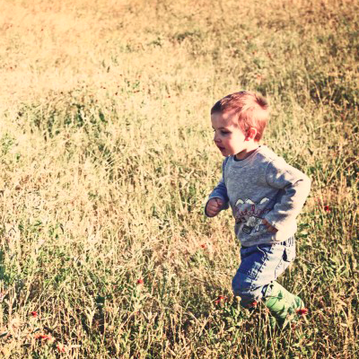

    <ons-page id="search.html">
      <ons-page class="main_pages" id="search-page">
        <ons-toolbar>
          <div class="center"><ons-search-input class="search_box" placeholder="Search"></ons-search-input></div>
        </ons-toolbar>

        <div>
          <!-- Same as the home page, the carousel is populated with stories when this page is displayed -->

          <ons-carousel class="stories-tab" id="channels" auto-refresh swipeable overscrollable item-width="70px"></ons-carousel>

          <!-- The combination of <ons-row> and <ons-col> elements are used to dispaly the pictures (the search results) in grid view -->

          <div>
            <ons-row>
              <ons-col class="search_wrapper">
                
              </ons-col>

              <ons-col class="search_wrapper">
                
              </ons-col>

              <ons-col class="search_wrapper">
                
              </ons-col>

              <ons-col class="search_wrapper">
                
              </ons-col>

              <ons-col class="search_wrapper">
                
              </ons-col>

              <ons-col class="search_wrapper">
                
              </ons-col>

              <ons-col class="search_wrapper">
                
              </ons-col>

              <ons-col class="search_wrapper">
                
              </ons-col>

              <ons-col class="search_wrapper">
                
              </ons-col>
            </ons-row>
          </div>
        </div>

        <style type="text/css">
          .stories-tab {
            padding-top: 8px;
            background-color: #f6f6f6;
            height: 75px;
            font-size: 12px;
          }

          .story {
            display: inline-table;
          }

          .story p {
            width: 100%;
            max-width: 50px;
            overflow: hidden;
            text-overflow: ellipsis;
            margin: 0;
            text-transform: none;
          }

          .story-thumbnail-wraper {
            text-align: center;
            border-radius: 50%;
          }

          .story-thumbnail {
            padding: 2px;
            width: 45px;
            border-radius: 50%;
            vertical-align: middle;
          }

          .story-thumbnail:active {
            width: 40px;
            transition: width 0.1s, height 0.1s;
          }

          .unread {
            border: 3px solid #d31010;
          }

          .read {
            border: 2px solid #afafaf;
          }

          .search_wrapper {
            flex-basis: 100px;
            margin-left: 0.25%;
            margin-right: 0.25%;
          }

          .search_thumbnail {
            width: 100%;
          }

          .search_box {
            width: 90%;
            padding-top: 7px;
          }

          .toolbar--material__center .search_box {
            padding-top: 14px;
          }

          .search-input {
            text-align: center;
            height: 28px;
          }
        </style>
      </ons-page>
    </ons-page >
 